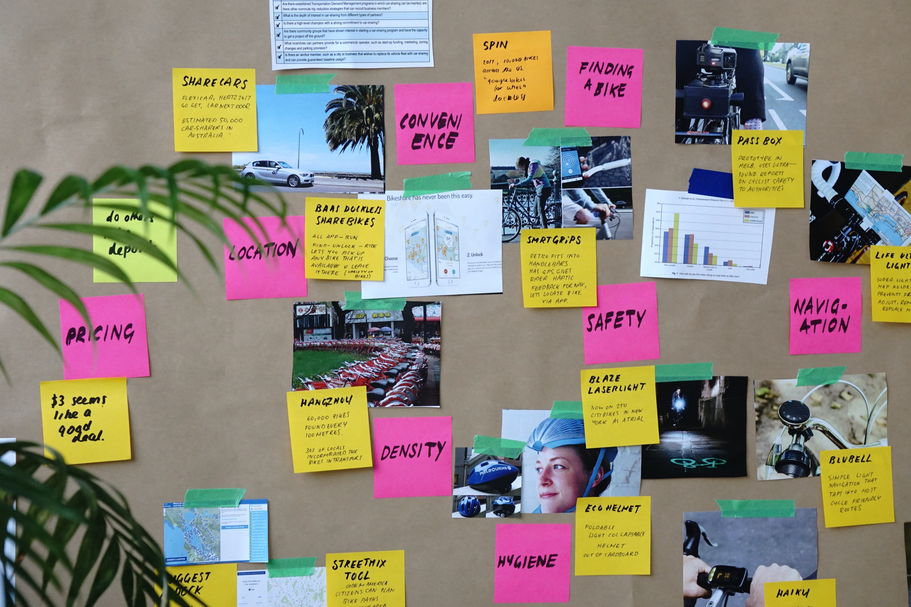
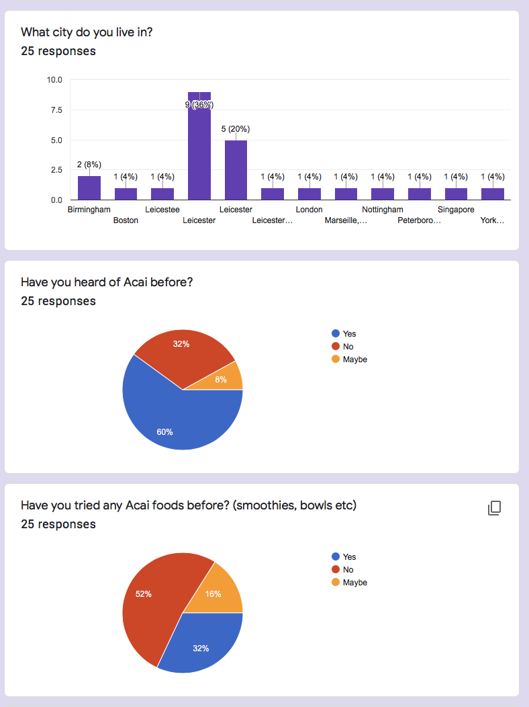
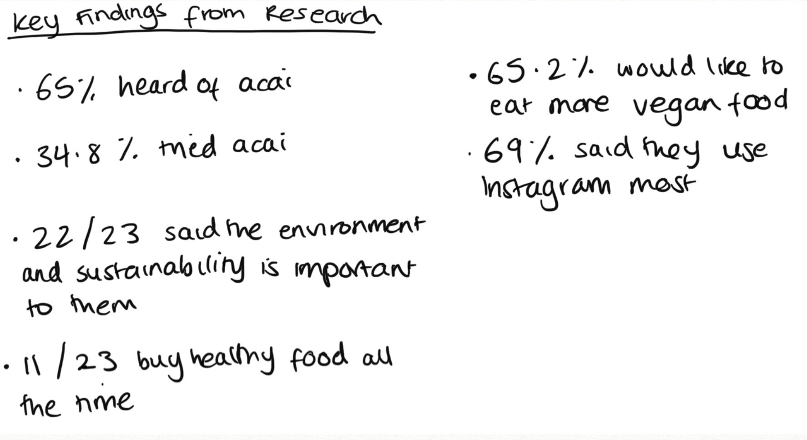
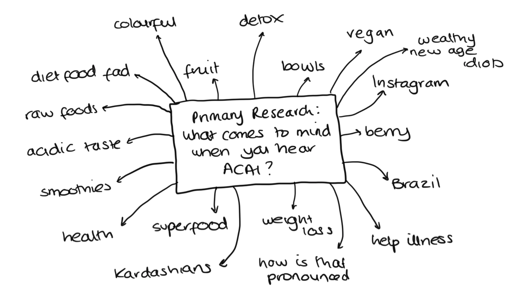
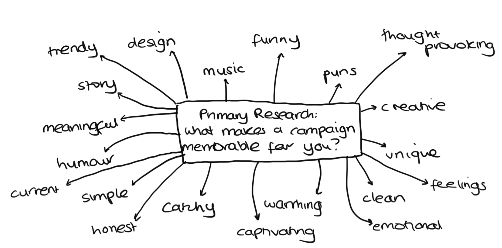
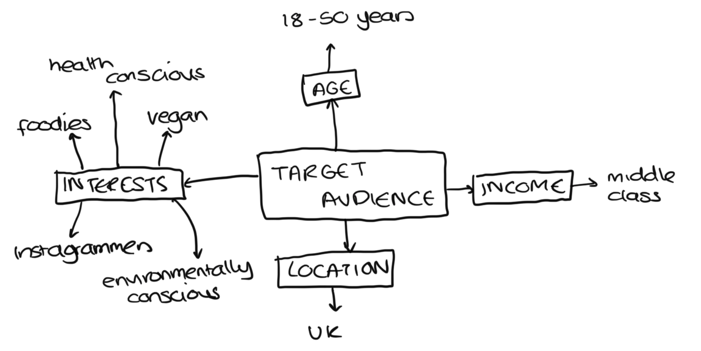

When approaching a digital marketing campaign, I think what is more important than the content itself is the research behind it. Research allows a brand to not only know who their audience is, but to determine what kind of marketing would work best in order to target them. For example, their location, age, gender, the social media platforms they use, their interests and hobbies, and more. From this, you can gauge what it is they would want to see in an advert or marketing campaign.
I started off by looking at some secondary research, from this I learnt that the acai berry market is dominated by North America, followed by Asia-Pacific, where this food trend is growing rapidly. This confirmed that acai is an up and coming trend, which is why it would be a good time to introduce this food to the UK market.
I then conducted some primary research, which was extremely beneficial as it provided both quantitive and qualitative data from my audience. I created a survey using Google Forms, asking questions such as “have you heard of acai before”, what their current diet/lifestyles are like, and what they like to see or find memorable in a campaign. I posted the survey on a reddit survey page, as well as on my own personal social media platforms, in order to get a large number of responses from a variety of people from different backgrounds.

I received a lot of useful feedback. Here are some of the key statistics I acquired from my primary research.

I also picked out some of the words that came up when the audience were asked “what comes to mind when you hear/think of acai?” As well as common responses to the question “what do you find memorable in a campaign?”


From this, I considered who the target audience of my campaign would be. The age range would be quite broad, because it is a food, and a natural food which doesn't exclude any particular age group. However, it is a trend, and a popular 'Instagrammable' food, and so this could appeal to a younger audience of 18-30 years old. The target audience is likely to be middle class, as acai berry products are usually considered to be fairly expensive, ranging from around £6 to £20 depending on the product. In terms of location, the campaign is directed at a UK audience.
